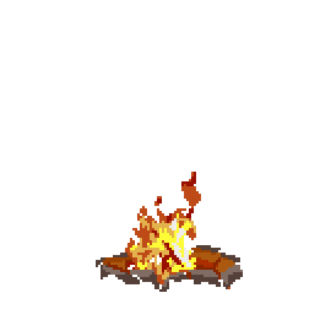

Software Developer / Musician & Producer / Storyteller
Hi, I'm Jesper — a software developer with a passion for clean code, agile methodologies, and continuous improvement.
I build software like I'm creating a story: Clear roles. Tight iterations. Legendary rewards. Focus on fun and character development.
The title of my narrative? Creative Sun (.cs).
My main quest is setting up elegant, maintainable systems and crafting joyful developer experiences.
Outside of coding, I write music, read books and play video / tabletop roleplaying games.
// Wanna know more about me? Read on below and check out my Socials - you'll find many more references there.
Or, you can stay here and explore my website a little more (Who knows what awaits you!).
As mentioned above, my name is Jesper /*+=*/ Kloster Frydendahl. I'm an experienced software dev who thrive in fast-paced environments where collaboration and innovation are at the forefront.
🔧 What I Do
I specialize in developing robust and scalable software solutions, focusing on enhancing developer experience (DevEx) and optimizing workflows. My approach is rooted in agile principles, ensuring that teams can adapt and deliver value efficiently.
🚀 My Approach
I believe in the power of clean code and its impact on team productivity and software maintainability. By fostering a culture of continuous learning and improvement, I aim to build systems that are not only functional but also elegant and sustainable.
🤝 Let's Connect
I'm always open to discussing new projects, sharing insights, or exploring opportunities for collaboration. Feel free to reach out — I look forward to connecting!
LinkedIn: @jesperfrydendahl
GitHub: @jkfrydendahl
Facebook: @jkfrydendahl
Congratulations, you've made it this far! Too tired to make it back home before nightfall? No worries my friend. Take a rest by the fire instead :-)
{kind=link}
{kind=link}
{kind=link}
{kind=link}